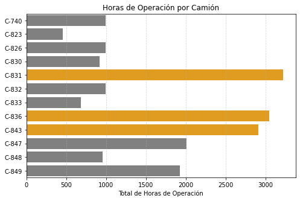
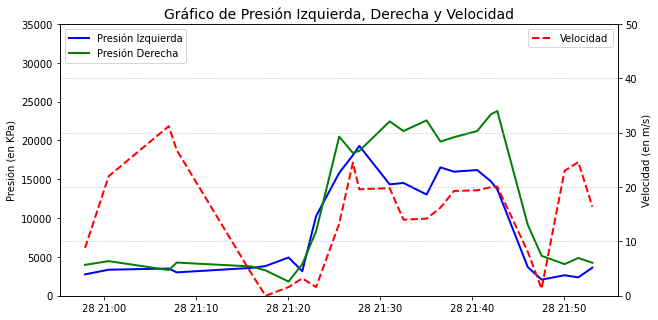
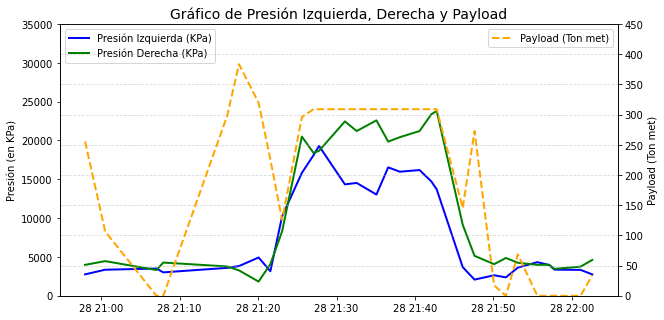
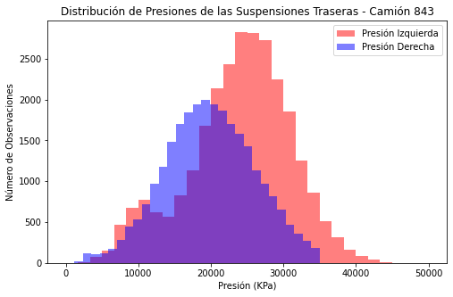
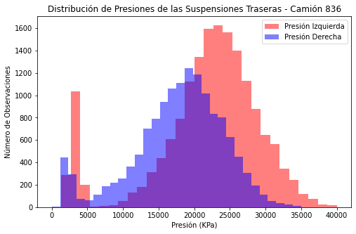
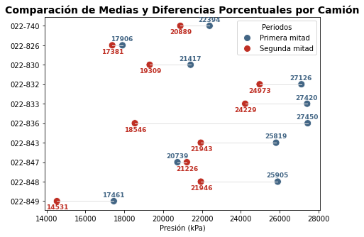
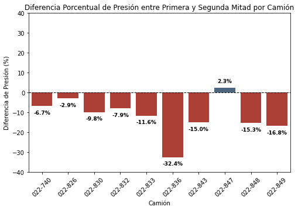
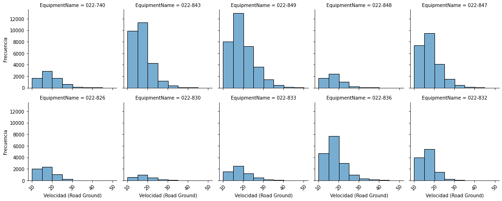
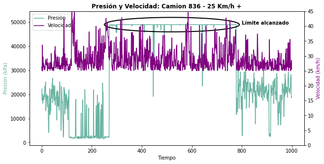

Preprocesamiento y Análisis de Datos#
En este capítulo se presentan los desarrollos y hallazgos obtenidos durante los procesos de ETL (Extracción, Transformación y Carga) y EDA (Análisis Exploratorio de Datos).
Extracción, Transformación y Carga (ETL)#
Los datos fueron proporcionados por CARBONES COLOMBIANOS DEL CERREJÓN S.A.S. e incluyen registros detallados de las suspensiones de cada camión. Para cada unidad, se especifica cuál suspensión presentó fallas, junto con información sobre la fecha de montaje y desmontaje, el componente afectado y las horas de operación. La siguiente tabla resume estos datos.
import pandas as pd
from tabulate import tabulate # Para mostrar la tabla de forma bonita
# Crear el DataFrame
data = pd.DataFrame({
"Fecha_Desmonte": ["20240411", "20240413", "20240430", "20240518",
"20240616", "20240623", "20240724", "20240725",
"20240804", "20240815", "20240818", "20240818",
"20240824", "20240909"],
"Fecha_Montaje": ["20240215", "20240217", "20240211", "20240113",
"20240319", "20240519", "20240307", "20231222",
"20240528", "20240707", "20240225", "20240714",
"20231228", "20240622"],
"No_Componente": ["02247572E", "02247810E-1", "02247881E-1", "02247824E",
"02247705E-1", "02247735E-1", "02247904E", "02247786E",
"02247704E-1", "02247708N", "02247746E", "02247570E-2",
"02247984E", "02247721E"],
"Cod_Comp": ["SUSP"] * 14,
"Mod": ["IT", "IT", "IT", "IT", "DT", "IT", "IT", "IT", "DT", "IT",
"DT", "IT", "IT", "IT"],
"No_Equipo": ["0220833", "0220848", "0220740", "0220847", "0220826",
"0220847", "0220849", "0220843", "0220830", "0220823",
"0220836", "0220836", "0220831", "0220832"],
"Horas": [685.77, 954.59, 998.27, 1534.82, 994.1, 473.7, 1922.72, 2907.45,
919.5, 454.7, 2556.31, 488.1, 3220.33, 993.1]
})
# Convertir columnas de fechas a tipo datetime
data["Fecha_Montaje"] = pd.to_datetime(data["Fecha_Montaje"], format="%Y%m%d")
data["Fecha_Desmonte"] = pd.to_datetime(data["Fecha_Desmonte"], format="%Y%m%d")
# Ordenar por Fecha_Montaje
data_ordenada = data.sort_values(by="Fecha_Montaje")
# Renombrar columnas
data_ordenada.columns = ["Fecha Desmonte", "Fecha Montaje", "No. Componente", "Comp", "Mod", "No. Equipo", "Horas"]
# Mostrar tabla en formato tabulado
print(tabulate(data_ordenada, headers='keys', tablefmt='grid'))
+----+---------------------+---------------------+------------------+--------+-------+--------------+---------+
| | Fecha Desmonte | Fecha Montaje | No. Componente | Comp | Mod | No. Equipo | Horas |
+====+=====================+=====================+==================+========+=======+==============+=========+
| 7 | 2024-07-25 00:00:00 | 2023-12-22 00:00:00 | 02247786E | SUSP | IT | 0220843 | 2907.45 |
+----+---------------------+---------------------+------------------+--------+-------+--------------+---------+
| 12 | 2024-08-24 00:00:00 | 2023-12-28 00:00:00 | 02247984E | SUSP | IT | 0220831 | 3220.33 |
+----+---------------------+---------------------+------------------+--------+-------+--------------+---------+
| 3 | 2024-05-18 00:00:00 | 2024-01-13 00:00:00 | 02247824E | SUSP | IT | 0220847 | 1534.82 |
+----+---------------------+---------------------+------------------+--------+-------+--------------+---------+
| 2 | 2024-04-30 00:00:00 | 2024-02-11 00:00:00 | 02247881E-1 | SUSP | IT | 0220740 | 998.27 |
+----+---------------------+---------------------+------------------+--------+-------+--------------+---------+
| 0 | 2024-04-11 00:00:00 | 2024-02-15 00:00:00 | 02247572E | SUSP | IT | 0220833 | 685.77 |
+----+---------------------+---------------------+------------------+--------+-------+--------------+---------+
| 1 | 2024-04-13 00:00:00 | 2024-02-17 00:00:00 | 02247810E-1 | SUSP | IT | 0220848 | 954.59 |
+----+---------------------+---------------------+------------------+--------+-------+--------------+---------+
| 10 | 2024-08-18 00:00:00 | 2024-02-25 00:00:00 | 02247746E | SUSP | DT | 0220836 | 2556.31 |
+----+---------------------+---------------------+------------------+--------+-------+--------------+---------+
| 6 | 2024-07-24 00:00:00 | 2024-03-07 00:00:00 | 02247904E | SUSP | IT | 0220849 | 1922.72 |
+----+---------------------+---------------------+------------------+--------+-------+--------------+---------+
| 4 | 2024-06-16 00:00:00 | 2024-03-19 00:00:00 | 02247705E-1 | SUSP | DT | 0220826 | 994.1 |
+----+---------------------+---------------------+------------------+--------+-------+--------------+---------+
| 5 | 2024-06-23 00:00:00 | 2024-05-19 00:00:00 | 02247735E-1 | SUSP | IT | 0220847 | 473.7 |
+----+---------------------+---------------------+------------------+--------+-------+--------------+---------+
| 8 | 2024-08-04 00:00:00 | 2024-05-28 00:00:00 | 02247704E-1 | SUSP | DT | 0220830 | 919.5 |
+----+---------------------+---------------------+------------------+--------+-------+--------------+---------+
| 13 | 2024-09-09 00:00:00 | 2024-06-22 00:00:00 | 02247721E | SUSP | IT | 0220832 | 993.1 |
+----+---------------------+---------------------+------------------+--------+-------+--------------+---------+
| 9 | 2024-08-15 00:00:00 | 2024-07-07 00:00:00 | 02247708N | SUSP | IT | 0220823 | 454.7 |
+----+---------------------+---------------------+------------------+--------+-------+--------------+---------+
| 11 | 2024-08-18 00:00:00 | 2024-07-14 00:00:00 | 02247570E-2 | SUSP | IT | 0220836 | 488.1 |
+----+---------------------+---------------------+------------------+--------+-------+--------------+---------+
Este documento presenta un análisis del comportamiento de las presiones en los camiones Hitachi EH5000. Se analizarán un total de 12 camiones, cada uno de los cuales está equipado con dos suspensiones: la suspensión derecha y la suspensión izquierda trasera, sumando un total de 24 suspensiones. A lo largo del análisis, se estudiará el comportamiento de las presiones a través del tiempo. Para ello, contamos con información adicional de dos variables relacionadas con la presión: el payload y la velocidad.
import os
def identify_delimiter(file_path):
"""Identifica si el archivo CSV usa coma o punto y coma como delimitador."""
with open(file_path, 'r', encoding='utf-8') as file:
first_line = file.readline()
if ',' in first_line:
return ','
elif ';' in first_line:
return ';'
else:
return None # No se encontró un delimitador claro
# Ruta de la carpeta donde están los archivos CSV
folder_path = os.path.expanduser('/Users/user/Library/CloudStorage/OneDrive-UniversidaddelNorte/Noveno semestre/TESIS DE GRADO/Mario liñan')
# Obtener la lista de archivos CSV en la carpeta
files = [os.path.join(folder_path, f) for f in os.listdir(folder_path) if f.endswith(".csv")]
# Identificar delimitadores para cada archivo
delimiters = {file: identify_delimiter(file) for file in files}
# Separar archivos según su delimitador
files_semicolon = [file for file, delim in delimiters.items() if delim == ';']
files_comma = [file for file, delim in delimiters.items() if delim == ',']
# Leer archivos con punto y coma como separador
df_list_semicolon = [pd.read_csv(file, sep=';', encoding='utf-8') for file in files_semicolon]
# Leer archivos con coma como separador
df_list_comma = [pd.read_csv(file, sep=',', encoding='utf-8') for file in files_comma]
# Combinar todos los dataframes
df_semicolon = pd.concat(df_list_semicolon, ignore_index=True) if df_list_semicolon else pd.DataFrame()
df_comma = pd.concat(df_list_comma, ignore_index=True) if df_list_comma else pd.DataFrame()
dfcamiones = pd.concat([df_semicolon, df_comma], ignore_index=True)
# Convertir la columna AdjustedReadTime a formato datetime si existe en el dataframe
if 'AdjustedReadTime' in dfcamiones.columns:
dfcamiones['AdjustedReadTime'] = pd.to_datetime(dfcamiones['AdjustedReadTime'], format='%Y-%m-%d %H:%M:%S', errors='coerce')
# Mostrar las primeras filas
display(dfcamiones.head(10))
| EquipmentName | AdjustedReadTime | StrutPressLeftRear | StrutPressureRightRear | PayLoad | Road Ground | |
|---|---|---|---|---|---|---|
| 0 | 022-740 | 2024-02-28 20:57:57 | 2760.6 | 3983.6 | 255.6 | 8.8 |
| 1 | 022-740 | 2024-02-28 21:00:31 | 3360.4 | 4465.9 | 106.5 | 22.0 |
| 2 | 022-740 | 2024-02-28 21:07:03 | 3507.9 | 3316.8 | 0.0 | 31.2 |
| 3 | 022-740 | 2024-02-28 21:07:55 | 3016.5 | 4278.6 | 0.0 | 26.8 |
| 4 | 022-740 | 2024-02-28 21:16:04 | 3596.8 | 3777.6 | 298.3 | 4.0 |
| 5 | 022-740 | 2024-02-28 21:17:34 | 3828.5 | 3271.9 | 383.5 | 0.0 |
| 6 | 022-740 | 2024-02-28 21:20:04 | 4931.3 | 1832.5 | 319.6 | 1.6 |
| 7 | 022-740 | 2024-02-28 21:21:34 | 3168.5 | 4067.5 | 225.6 | 3.2 |
| 8 | 022-740 | 2024-02-28 21:23:04 | 10255.2 | 8315.5 | 125.5 | 1.6 |
| 9 | 022-740 | 2024-02-28 21:25:35 | 15832.7 | 20498.5 | 295.9 | 13.3 |
Los datos fueron proporcionados en un archivo .zip, que contenía 18 archivos .csv, cada uno representando una parte de los datos de las suspensiones por camión. En el código anterior, todos los archivos .csv fueron unificados en un único DataFrame denominado dfcamiones.
Una vez consolidada la información, se procede al análisis de datos con el objetivo de identificar patrones y extraer información relevante para la investigación.
Análisis Exploratorio de Datos (EDA)#
A continuación, se presentan los códigos utilizados para analizar la base de datos de las suspensiones, con el objetivo de identificar tendencias y patrones relevantes. A lo largo del EDA, utilizaremos librerías como NumPy, Matplotlib, Pandas, Seaborn y Tabulate para mejorar la visualización de los gráficos y facilitar su interpretación.
import numpy as np
import matplotlib.pyplot as plt
# Datos
names = ["Fallas", "Sin Falla"]
averages = [14, 10]
colors = [(0.3, 0.1, 0.4, 0.6), (0.3, 0.5, 0.4, 0.6)]
# Crear el gráfico de barras
fig, ax = plt.subplots()
bars = ax.bar(names, averages, color=colors)
# Añadir líneas de referencia
ax.axvline(x=0.5, color="grey", linestyle="--")
# Añadir texto sobre las barras
for bar, avg in zip(bars, averages):
ax.text(bar.get_x() + bar.get_width()/2, avg + 0.5, f"n: {avg}", ha='center', fontsize=10)
# Añadir título
ax.set_title("Estado de las Suspensiones")
# Añadir leyenda
legend_labels = ["Susp. fallas", "Susp. Sin fallas"]
legend_patches = [plt.Line2D([0], [0], marker='o', color='w', markersize=10, markerfacecolor=c) for c in colors]
ax.legend(legend_patches, legend_labels, loc="upper right", fontsize=8, frameon=False)
# Mostrar el gráfico
plt.ylim(0, 20)
plt.show()

En el gráfico anterior se muestra la clasificación del dataset, donde se identifican 14 suspensiones con falla, registradas en el reporte tabulado, y 10 suspensiones sin falla.
import seaborn as sns
# Agrupar las horas por cada camión y ordenar de menor a mayor
data_summary = data.groupby("No_Equipo", as_index=False).agg(Total_Horas=("Horas", "sum"))
data_summary = data_summary.sort_values(by="Total_Horas")
# Cambiar "0220" por "C-"
data_summary["No_Equipo"] = data_summary["No_Equipo"].str.replace("^0220", "C-", regex=True)
# Ordenar alfabéticamente
data_summary = data_summary.sort_values(by="No_Equipo")
# Crear la columna de colores para resaltar los tres camiones con más horas
data_summary["highlight"] = np.where(data_summary["Total_Horas"].rank(method="min", ascending=False) <= 3, "orange", "grey")
# Asegurar que No_Equipo es de tipo string
data_summary["No_Equipo"] = data_summary["No_Equipo"].astype(str)
# Ordenar alfabéticamente por No_Equipo
data_summary = data_summary.sort_values(by="No_Equipo", ascending=True)
# Crear el gráfico
plt.figure(figsize=(8, 5))
sns.barplot(x="Total_Horas", y="No_Equipo", data=data_summary, palette=data_summary["highlight"].tolist())
# Ajustar título y etiquetas
plt.xlabel("Total de Horas de Operación")
plt.ylabel("")
plt.title("Horas de Operación por Camión")
plt.grid(axis="x", linestyle="--", alpha=0.5)
plt.show()

En este gráfico de barras se muestra el tiempo en operación de cada camión, lo que permite visualizar el período de funcionamiento de cada suspensión antes de presentar una falla. Se creo la grafica a partir de la tabla de reporte data.
# Filtrar el camión específico
camion740 = dfcamiones[dfcamiones["EquipmentName"] == "022-740"].copy()
# Seleccionar solo los primeros 25 registros
subset_data = camion740.iloc[:25]
# Crear el gráfico
fig, ax1 = plt.subplots(figsize=(10, 5))
# Graficar la presión izquierda y derecha en el eje Y principal
ax1.plot(subset_data["AdjustedReadTime"], subset_data["StrutPressLeftRear"],
label="Presión Izquierda", color="blue", linewidth=2)
ax1.plot(subset_data["AdjustedReadTime"], subset_data["StrutPressureRightRear"],
label="Presión Derecha", color="green", linewidth=2)
# Configurar eje Y principal
ax1.set_ylabel("Presión (en KPa)")
ax1.set_ylim(0, 35000)
ax1.legend(loc="upper left")
# Crear segundo eje Y para la velocidad
ax2 = ax1.twinx()
ax2.plot(subset_data["AdjustedReadTime"], subset_data["Road Ground"],
label="Velocidad", color="red", linewidth=2, linestyle="dashed")
# Configurar eje Y secundario
ax2.set_ylabel("Velocidad (en m/s)")
ax2.set_ylim(0, 50)
ax2.legend(loc="upper right")
# Ajustar título y etiquetas
plt.title("Gráfico de Presión Izquierda, Derecha y Velocidad", fontsize=14)
plt.xlabel("Tiempo")
plt.xticks(rotation=45)
plt.grid(True, linestyle="--", alpha=0.5)
# Mostrar el gráfico
plt.show()

En este gráfico, se observa el comportamiento de la presión de las suspensiones y la velocidad a lo largo de un ciclo de operación. Se filtró dfcamiones para obtener los datos de un camion en especifico, en este caso el camión 740.
# Filtrar el camión específico
camion740 = dfcamiones[dfcamiones["EquipmentName"] == "022-740"].copy()
# Seleccionar los primeros 30 registros
subset_data = camion740.iloc[:30]
# Crear el gráfico
fig, ax1 = plt.subplots(figsize=(10, 5))
# Graficar las presiones en el eje Y principal
ax1.plot(subset_data["AdjustedReadTime"], subset_data["StrutPressLeftRear"],
label="Presión Izquierda (KPa)", color="blue", linewidth=2)
ax1.plot(subset_data["AdjustedReadTime"], subset_data["StrutPressureRightRear"],
label="Presión Derecha (KPa)", color="green", linewidth=2)
# Configurar eje Y principal (Presión)
ax1.set_ylabel("Presión (en KPa)")
ax1.set_ylim(0, 35000)
ax1.legend(loc="upper left")
# Crear segundo eje Y para el Payload
ax2 = ax1.twinx()
ax2.plot(subset_data["AdjustedReadTime"], subset_data["PayLoad"],
label="Payload (Ton met)", color="orange", linewidth=2, linestyle="dashed")
# Configurar eje Y secundario (Payload)
ax2.set_ylabel("Payload (Ton met)")
ax2.set_ylim(0, 450)
ax2.legend(loc="upper right")
# Ajustar título y etiquetas
plt.title("Gráfico de Presión Izquierda, Derecha y Payload", fontsize=14)
plt.xlabel("Tiempo")
plt.xticks(rotation=45)
plt.grid(True, linestyle="--", alpha=0.5)
# Mostrar el gráfico
plt.show()

En este gráfico, se analiza el comportamiento de la carga de estéril (payload) a lo largo del ciclo de operación del camión. Se realizó el mismo proceso que con la gráfica anterior.
Etapa de Transporte#
A continuación, se presentan los códigos utilizados para analizar el comportamiento del camión durante la etapa de transporte.
# Filtrar datos según las condiciones
dfcamiones2 = dfcamiones[(dfcamiones["PayLoad"] > 150) & (dfcamiones["Road Ground"] > 10)]
camion740 = dfcamiones2[dfcamiones2["EquipmentName"] == "022-843"]
# Crear el histograma
plt.figure(figsize=(8, 5))
# Histograma de la presión izquierda
plt.hist(camion740["StrutPressLeftRear"], bins=30, range=(0, 50000), color=(1, 0, 0, 0.5), label="Presión Izquierda")
# Histograma de la presión derecha (superpuesto)
plt.hist(camion740["StrutPressureRightRear"], bins=30, range=(0, 35000), color=(0, 0, 1, 0.5), label="Presión Derecha")
# Configurar etiquetas y título
plt.xlabel("Presión (KPa)")
plt.ylabel("Número de Observaciones")
plt.title("Distribución de Presiones de las Suspensiones Traseras - Camión 843")
# Agregar leyenda
plt.legend(loc="upper right")
# Mostrar el gráfico
plt.show()

Se observa una mayor frecuencia de valores de presión elevados en la suspensión izquierda, la cual fue diagnosticada con falla. En este punto, creamos un Dataframe llamado dfcamiones2 el cual es el mismo dfcamiones pero filtrado con velocidad mayor a 10 Km/h y Payload mayor a 150 Ton met.
# Filtrar datos según las condiciones
dfcamiones2 = dfcamiones[(dfcamiones["PayLoad"] > 150) & (dfcamiones["Road Ground"] > 10)]
camion740 = dfcamiones2[dfcamiones2["EquipmentName"] == "022-836"]
# Crear el histograma
plt.figure(figsize=(8, 5))
# Histograma de la presión izquierda
plt.hist(camion740["StrutPressLeftRear"], bins=30, range=(0, 40000), color=(1, 0, 0, 0.5), label="Presión Izquierda")
# Histograma de la presión derecha (superpuesto)
plt.hist(camion740["StrutPressureRightRear"], bins=30, range=(0, 35000), color=(0, 0, 1, 0.5), label="Presión Derecha")
# Configurar etiquetas y título
plt.xlabel("Presión (KPa)")
plt.ylabel("Número de Observaciones")
plt.title("Distribución de Presiones de las Suspensiones Traseras - Camión 836")
# Agregar leyenda
plt.legend(loc="upper right")
# Mostrar el gráfico
plt.show()

En este caso, el camión 836 muestra un comportamiento similar; sin embargo, la suspensión derecha fue la que presentó fallas. A continuación, se calculará la diferencia de medias entre la primera y la segunda mitad de la operación.
# Filtrar los datos según las condiciones iniciales
dfcamiones2 = dfcamiones[(dfcamiones["PayLoad"] > 150) & (dfcamiones["Road Ground"] > 10)].copy()
# Lista de camiones y suspensiones a analizar (diccionario en Python)
camiones_y_suspensiones = {
"022-740": "StrutPressLeftRear",
"022-826": "StrutPressureRightRear",
"022-830": "StrutPressureRightRear",
"022-832": "StrutPressLeftRear",
"022-833": "StrutPressLeftRear",
"022-836": "StrutPressureRightRear",
"022-843": "StrutPressLeftRear",
"022-847": "StrutPressLeftRear",
"022-848": "StrutPressLeftRear",
"022-849": "StrutPressLeftRear"
}
# Diccionario para almacenar los resultados
resultados = {}
# Iterar sobre cada camión y su columna de suspensión correspondiente
for camion, columna_suspension in camiones_y_suspensiones.items():
# Filtrar los datos para el camión actual
datos_camion = dfcamiones2[dfcamiones2["EquipmentName"] == camion]
# Verificar si hay datos para el camión
if datos_camion.empty:
continue # Saltar si no hay datos
# Calcular el número de filas y el punto medio
n_filas = len(datos_camion)
punto_medio = n_filas // 2 # División entera
# Calcular la media para la primera mitad
media_primera_mitad = datos_camion[columna_suspension].iloc[:punto_medio].mean(skipna=True)
# Calcular la media para la segunda mitad
media_segunda_mitad = datos_camion[columna_suspension].iloc[punto_medio:].mean(skipna=True)
# Guardar los resultados en el diccionario
resultados[camion] = {
"Media_Primera_Mitad": media_primera_mitad,
"Media_Segunda_Mitad": media_segunda_mitad
}
# Convertir los resultados a un DataFrame
df_resultados = pd.DataFrame.from_dict(resultados, orient="index").reset_index()
df_resultados.rename(columns={"index": "Camion"}, inplace=True)
En el código anterior, se dividieron los datos de cada suspensión con falla en dos partes para analizar su comportamiento de manera individual. Se eligieron manualmente las suspensiones que fallaron y despues de graficó su comportamiento.
# Convertir los resultados en un DataFrame adecuado
df_resultados = pd.DataFrame([
{
"Camion": camion,
"Media_Primera_Mitad": round(res["Media_Primera_Mitad"], 0),
"Media_Segunda_Mitad": round(res["Media_Segunda_Mitad"], 0)
}
for camion, res in resultados.items()
])
# Calcular la diferencia en porcentaje usando la media de ambas mitades
df_resultados["Diferencia"] = (
(df_resultados["Media_Segunda_Mitad"] - df_resultados["Media_Primera_Mitad"]) /
df_resultados[["Media_Primera_Mitad", "Media_Segunda_Mitad"]].mean(axis=1)
) * 100
# Transformar el DataFrame
df_resultados_long = df_resultados.melt(id_vars=["Camion", "Diferencia"],
value_vars=["Media_Primera_Mitad", "Media_Segunda_Mitad"],
var_name="Mitad",
value_name="Media")
# Asignar categorías ordenadas a los camiones para posicionamiento
df_resultados_long["Camion"] = pd.Categorical(df_resultados_long["Camion"], categories=df_resultados_long["Camion"].unique(), ordered=True)
# Colores personalizados
color_map = {"Media_Primera_Mitad": "#436685", "Media_Segunda_Mitad": "#BF2F24"}
# Crear gráfico
fig, ax1 = plt.subplots(figsize=(8, 5))
# Convertir categorías de camión en valores numéricos
y_positions = {camion: i * 10 for i, camion in enumerate(df_resultados_long["Camion"].cat.categories)}
# Dibujar líneas entre puntos
for camion in df_resultados_long["Camion"].unique():
datos_camion = df_resultados_long[df_resultados_long["Camion"] == camion]
ax1.plot(datos_camion["Media"], [y_positions[camion]] * len(datos_camion), color="#E0E0E0", linewidth=1)
# Graficar puntos
sns.scatterplot(data=df_resultados_long, x="Media", y=df_resultados_long["Camion"].map(y_positions), hue="Mitad", palette=color_map, s=100, ax=ax1)
# Ajustar etiquetas
for _, row in df_resultados_long.iterrows():
x_offset = 20 if row["Mitad"] == "Media_Segunda_Mitad" else -20 # Separación en X
y_offset = 3.2 if row["Mitad"] == "Media_Segunda_Mitad" else -3.2 # Separación en Y
ax1.text(row["Media"] + x_offset, y_positions[row["Camion"]] + y_offset, f"{int(row['Media'])}",
color=color_map[row["Mitad"]], fontsize=9, ha="center", va="center", weight="bold")
# Configurar el gráfico
ax1.set_xlabel("Presión (kPa)")
ax1.set_ylabel(None)
ax1.set_title("Comparación de Medias y Diferencias Porcentuales por Camión", fontsize=14, fontweight="bold")
ax1.set_yticks(list(y_positions.values()))
ax1.set_yticklabels(y_positions.keys()) # Restaurar nombres originales de camiones
ax1.grid(False)
ax1.legend().set_visible(False)
# Agregar leyenda personalizada
handles = [
plt.Line2D([0], [0], marker='o', color='w', label='Primera mitad', markersize=10, markerfacecolor="#436685"),
plt.Line2D([0], [0], marker='o', color='w', label='Segunda mitad', markersize=10, markerfacecolor="#BF2F24")
]
ax1.legend(handles=handles, loc="upper right", title="Periodos")
# Ajustar diseño
plt.subplots_adjust(right=0.8)
plt.show()

Se observa el promedio de presión en la primera y segunda mitad del ciclo total de operación de cada suspensión. Solo en un caso, la suspensión del camión 847, la presión en la primera mitad es mayor que en la segunda.
# Calcular la diferencia en porcentaje
df_resultados["Diferencia_Porcentual"] = (
(df_resultados["Media_Segunda_Mitad"] - df_resultados["Media_Primera_Mitad"]) / df_resultados["Media_Primera_Mitad"]
) * 100
# Crear el gráfico de barras vertical con colores para positivos y negativos
fig, ax = plt.subplots(figsize=(8, 5))
colors = ["#BF2F24" if x < 0 else "#436685" for x in df_resultados["Diferencia_Porcentual"]]
sns.barplot(data=df_resultados, x="Camion", y="Diferencia_Porcentual", palette=colors, ax=ax)
# Agregar etiquetas de los valores sobre cada barra
for index, row in df_resultados.iterrows():
y_offset = -2 if row["Diferencia_Porcentual"] < 0 else 2 # Ajuste de posición de etiqueta
ax.text(index, row["Diferencia_Porcentual"] + y_offset, f"{row['Diferencia_Porcentual']:.1f}%",
ha='center', va='bottom' if row["Diferencia_Porcentual"] > 0 else 'top',
fontsize=9, weight="bold")
# Configurar el gráfico
ax.set_xlabel("Camión")
ax.set_ylabel("Diferencia de Presión (%)")
ax.set_title("Diferencia Porcentual de Presión entre Primera y Segunda Mitad por Camión")
ax.set_ylim(-40, 40) # Ajustar el rango del eje Y
plt.axhline(0, color='black', linestyle='--', linewidth=1) # Línea en el eje 0 para referencia
plt.xticks(rotation=45)
plt.show()

En este gráfico de barras, se muestran las suspensiones que presentaron fallas por camión. Es importante destacar que se excluyeron los camiones 823, debido a la falta de datos de presión, y 831 (suspensión izquierda - falla), ya que no contaba con información disponible. En este código, se calculó la diferencia en porcentaje de cada mitad por suspensión y se graficaron.
Velocidad vs. Presión#
CHM Minería plantea una hipótesis sobre las fallas en las suspensiones, enfocándose en la velocidad del camión durante la etapa de transporte. Según el gerente de soporte técnico, las variaciones en la velocidad en esta fase podrían estar afectando el rendimiento y la vida útil de las suspensiones.
# Filtrar los datos para los camiones especificados
camiones = list(camiones_y_suspensiones.keys())
velocidades_camiones = dfcamiones2[dfcamiones2["EquipmentName"].isin(camiones)][["EquipmentName", "Road Ground"]]
# Crear el gráfico con FacetGrid para dividir por camión en 5 columnas
g = sns.FacetGrid(velocidades_camiones, col="EquipmentName", col_wrap=5, sharex=True, sharey=True)
# Agregar histogramas
g.map_dataframe(sns.histplot, x="Road Ground", binwidth=5, alpha=0.6, kde=False)
# Configurar etiquetas de los ejes
g.set_axis_labels("Velocidad (Road Ground)", "Frecuencia")
# Ajustar etiquetas del eje X para que sean visibles y rotadas
for ax in g.axes.flat:
plt.setp(ax.get_xticklabels(), visible=True, rotation=45)
plt.show()

Se observa un comportamiento similar en todos los casos; sin embargo, en cada uno se registran valores superiores a 30 km/h, lo que podría indicar la presencia de altas velocidades durante la etapa de transporte.
# Extraer los nombres de los camiones a analizar
camiones = list(camiones_y_suspensiones.keys())
# Crear la primera tabla: Frecuencia y porcentaje de velocidades mayores a 25 km/h por camión
tabla_frecuencias = (
dfcamiones2[dfcamiones2["EquipmentName"].isin(camiones) & (dfcamiones2["Road Ground"] > 25)]
.groupby("EquipmentName")
.size()
.reset_index(name="Frecuencia")
)
# Calcular el porcentaje
tabla_frecuencias["Porcentaje (%)"] = round((tabla_frecuencias["Frecuencia"] / tabla_frecuencias["Frecuencia"].sum()) * 100, 1)
# Crear la segunda tabla: Velocidades máximas por camión
velocidad_maxima = (
dfcamiones2[dfcamiones2["EquipmentName"].isin(camiones)]
.groupby("EquipmentName")["Road Ground"]
.max()
.reset_index(name="Velocidad Máxima")
)
# Combinar ambas tablas
tabla_combinada = pd.merge(tabla_frecuencias, velocidad_maxima, on="EquipmentName", how="left")
# Mostrar la tabla con formato tabulado
print(tabulate(tabla_combinada, headers="keys", tablefmt="pretty", showindex=False))
+---------------+------------+----------------+------------------+
| EquipmentName | Frecuencia | Porcentaje (%) | Velocidad Máxima |
+---------------+------------+----------------+------------------+
| 022-740 | 879 | 6.4 | 45.2 |
| 022-826 | 286 | 2.1 | 43.5 |
| 022-830 | 189 | 1.4 | 42.4 |
| 022-832 | 299 | 2.2 | 43.5 |
| 022-833 | 700 | 5.1 | 45.6 |
| 022-836 | 1401 | 10.2 | 45.5 |
| 022-843 | 1710 | 12.5 | 45.2 |
| 022-847 | 2136 | 15.6 | 45.4 |
| 022-848 | 344 | 2.5 | 40.6 |
| 022-849 | 5768 | 42.1 | 46.5 |
+---------------+------------+----------------+------------------+
Al filtrar los datos de las suspensiones durante la etapa de transporte con velocidades superiores a 25 km/h, se identifican valores máximos muy por encima de los límites permitidos.
# Filtrar los datos
prueba = dfcamiones2[dfcamiones2["Road Ground"] >= 25]
data_plot = (
prueba[prueba["EquipmentName"] == "022-836"]
.iloc[:1000] # Tomar los primeros 1000 valores
.copy()
)
data_plot["Tiempo"] = np.arange(len(data_plot)) # Crear columna de tiempo
# Escalar Road Ground correctamente en su propia escala
data_plot["Road Ground Scaled"] = data_plot["Road Ground"]
# Crear el gráfico
fig, ax1 = plt.subplots(figsize=(10, 5))
ax2 = ax1.twinx() # Crear segundo eje Y
ax1.plot(data_plot["Tiempo"], data_plot["StrutPressureRightRear"], color="#69b3a2", label="Presión")
ax2.plot(data_plot["Tiempo"], data_plot["Road Ground Scaled"], color="purple", label="Velocidad")
# Etiquetas y título
ax1.set_xlabel("Tiempo")
ax1.set_ylabel("Presión (kPa)", color="#69b3a2")
ax2.set_ylabel("Velocidad (km/h)", color="purple")
ax2.set_ylim(0, 45) # Escalar correctamente el eje de velocidad
plt.title("Presión y Velocidad: Camion 836 - 25 Km/h +", fontsize=12, fontweight="bold")
# Agregar círculo
circle_x = 520 + 270 * np.cos(np.linspace(0, 2 * np.pi, 100))
circle_y = 49000 + 3000 * np.sin(np.linspace(0, 2 * np.pi, 100))
ax1.plot(circle_x, circle_y, color="black", linewidth=2)
ax1.annotate("Límite alcanzado", xy=(800, max(data_plot["StrutPressureRightRear"])), color="black", fontweight="bold")
# Combinar las leyendas de ambos ejes
lines1, labels1 = ax1.get_legend_handles_labels()
lines2, labels2 = ax2.get_legend_handles_labels()
ax1.legend(lines1 + lines2, labels1 + labels2, loc="upper left")
plt.show()

El gráfico anterior muestra un ejemplo de las presiones máximas alcanzadas durante picos de velocidad superiores al límite permitido. Con velocidades de 40 km/h, se registran presiones que superan los 45,000 kPa. En este código, se filtró dfcamiones2 por velocidades mayores a 25 Km/h y se graficaron las dos variables de interes, Presión y Velocidad.
Procesamiento de datos#
A partir de este analisis, para poder realizar modelos de clasificacion, se tomara la variable que mayor repercucion tiene en nuestra variable de respuesta, Presion (kPa). Con esto disenamos las siguientes variables que nos ayudaran a comprender y predecir si una suspension fallara o no. estas son:
- Media (en KPa)
- Desviación Estándar
- Presión Máxima
- Presión Mínima
- Cantidad de picos de presión alcanzados
- Duración total de los picos
- Mediana
- Tasa de cambio de presión
- Tiempo en operación (en minutos)
En el siguiente codigo se encuentra la creacion de la tabla para su uso a la hora de entrenar modelos.
# Filtrar camiones y eliminar columnas específicas
def filtrar_camion(df, equipo, columna_eliminar):
return df[df["EquipmentName"] == equipo].drop(columns=[columna_eliminar], errors='ignore')
# Lista de camiones y columnas a eliminar
camiones = ["022-740", "022-826", "022-830", "022-832", "022-833", "022-836", "022-843", "022-847", "022-848", "022-849"]
columnas = {"Left": "StrutPressLeftRear", "Right": "StrutPressureRightRear"}
# Crear diccionarios con DataFrames filtrados
filtered_data = {}
for camion in camiones:
filtered_data[f"{camion}_L"] = filtrar_camion(dfcamiones2, camion, columnas["Right"])
filtered_data[f"{camion}_R"] = filtrar_camion(dfcamiones2, camion, columnas["Left"])
# Agregar solo la suspensión derecha del camión 831
filtered_data["022-831_R"] = filtrar_camion(dfcamiones2, "022-831", columnas["Left"])
# Función para calcular métricas
def calcular_metricas(df, columna_presion, tiempo_columna, umbral_presion_alta=30000):
if columna_presion not in df.columns:
return {
"mean_presion": np.nan,
"sd_presion": np.nan,
"max_presion": np.nan,
"min_presion": np.nan,
"peaks_presion": np.nan,
"median_presion": np.nan,
"pressure_change_rate": np.nan,
"high_duration_presion": np.nan,
"cv_presion": np.nan,
"num_trend_changes": np.nan,
}
valid_values = df[columna_presion].dropna()
if len(valid_values) > 1:
pressure_change_rate = np.mean(np.abs(np.diff(valid_values)))
# Coeficiente de variación (CV)
cv_presion = valid_values.std() / valid_values.mean() if valid_values.mean() != 0 else np.nan
# Número de cambios de dirección
diff_signs = np.sign(np.diff(valid_values))
num_trend_changes = np.sum(diff_signs[:-1] != diff_signs[1:])
else:
pressure_change_rate = np.nan
cv_presion = np.nan
num_trend_changes = np.nan
if len(df) > 1:
tiempo_acumulado_horas = df[tiempo_columna].diff().dt.total_seconds() / 3600
tiempo_acumulado_horas.fillna(0, inplace=True)
else:
tiempo_acumulado_horas = np.zeros(len(df))
high_duration_presion = np.sum((valid_values > umbral_presion_alta) * tiempo_acumulado_horas)
return {
"mean_presion": valid_values.mean(),
"sd_presion": valid_values.std(),
"max_presion": valid_values.max(),
"min_presion": valid_values.min(),
"peaks_presion": np.sum(valid_values > umbral_presion_alta),
"median_presion": valid_values.median(),
"pressure_change_rate": pressure_change_rate,
"high_duration_presion": high_duration_presion,
"cv_presion": cv_presion,
"num_trend_changes": num_trend_changes,
}
# Calcular métricas para cada camión y dirección
metricas = {}
for key, df in filtered_data.items():
lado = "Left" if key.endswith("_L") else "Right"
metricas[key] = calcular_metricas(df, columnas[lado], "AdjustedReadTime")
# Convertir a DataFrame
metricas_df = pd.DataFrame.from_dict(metricas, orient='index').reset_index()
metricas_df[['Equipo', 'Suspension']] = metricas_df['index'].str.split('_', expand=True)
metricas_df.drop(columns=['index'], inplace=True)
# Agregar columna de fallas con la longitud correcta
num_rows = len(metricas_df)
fallas = [1,0,0,1,0,1,1,1,0,1,0,1,1,1,0,1,0,1,0,1,0]
metricas_df['Falla'] = (fallas * (num_rows // len(fallas) + 1))[:num_rows] # Ajustar dinámicamente
# Reordenar columnas
column_order = ["Equipo", "Suspension", "Falla", "mean_presion", "sd_presion", "max_presion",
"min_presion", "peaks_presion", "median_presion", "pressure_change_rate",
"high_duration_presion", "cv_presion", "num_trend_changes"]
metricas_df = metricas_df[column_order]
# Mostrar la tabla
print(metricas_df)
Equipo Suspension Falla mean_presion sd_presion max_presion \
0 022-740 L 1 21641.506274 5260.175821 34473.8
1 022-740 R 0 19801.161056 5206.772627 49117.1
2 022-826 L 0 26095.888559 5403.453187 42847.2
3 022-826 R 1 17643.687250 5294.362156 38931.1
4 022-830 L 0 20735.948609 8770.715037 42379.4
5 022-830 R 1 20362.288119 7051.834262 41785.6
6 022-832 L 1 26049.137374 5469.099930 44803.9
7 022-832 R 1 19161.502664 5473.768538 39605.6
8 022-833 L 0 25824.587161 5795.656571 43979.4
9 022-833 R 1 17070.491458 5589.978325 36353.5
10 022-836 L 0 21702.262692 7664.032764 43643.9
11 022-836 R 1 22997.799439 12907.443805 49000.0
12 022-843 L 1 23880.691775 7094.501721 46830.0
13 022-843 R 1 20014.720807 6402.293117 43557.8
14 022-847 L 0 20982.545038 10339.650395 47375.0
15 022-847 R 1 17767.302485 7033.945196 41377.2
16 022-848 L 0 23925.447116 7620.257833 44067.2
17 022-848 R 1 15576.650046 6830.255872 37453.3
18 022-849 L 0 15996.111193 8920.978051 34473.8
19 022-849 R 1 18118.352544 9139.968560 53195.0
20 022-831 R 0 21287.314530 6942.476128 37864.4
min_presion peaks_presion median_presion pressure_change_rate \
0 1631.8 379 21790.10 2585.327605
1 2005.2 120 20042.30 2664.393305
2 3305.6 1290 26346.10 2305.921631
3 2166.7 92 17444.50 2437.081836
4 0.0 232 22112.20 2552.602642
5 572.2 173 20813.90 2943.257877
6 3952.2 2598 25959.20 2615.794375
7 1970.6 279 19073.05 2668.015273
8 1314.4 1305 26006.70 2230.039001
9 1295.6 87 16836.10 2378.520038
10 1408.2 1676 22894.50 2423.157821
11 945.0 2933 19883.30 2107.087760
12 2646.7 5115 24574.75 2311.084536
13 1387.8 1717 19850.80 2769.822974
14 0.0 3717 23416.10 2661.386818
15 991.7 700 18290.50 2656.441145
16 1462.2 1040 24912.20 2300.450332
17 0.0 111 15730.00 2577.724548
18 0.0 906 18072.90 2448.987047
19 2166.5 2208 20311.20 2860.422343
20 1170.6 183 22475.60 2349.709188
high_duration_presion cv_presion num_trend_changes
0 30.874722 0.243060 4101
1 26.602222 0.262953 4119
2 185.937778 0.207061 3429
3 11.661389 0.300071 3247
4 13.269722 0.422971 1116
5 66.706111 0.346318 1143
6 341.459167 0.209953 6800
7 34.658889 0.285665 6733
8 280.631389 0.224424 3329
9 11.404444 0.327464 3218
10 179.615327 0.353144 9722
11 -1862.262724 0.561247 8631
12 838.029167 0.297081 15650
13 288.799167 0.319879 15363
14 397.419167 0.492774 11480
15 160.180833 0.395893 13100
16 211.469167 0.318500 3245
17 11.419167 0.438493 3000
18 39.594167 0.557697 18831
19 302.985000 0.504459 19726
20 984.842500 0.326132 2516